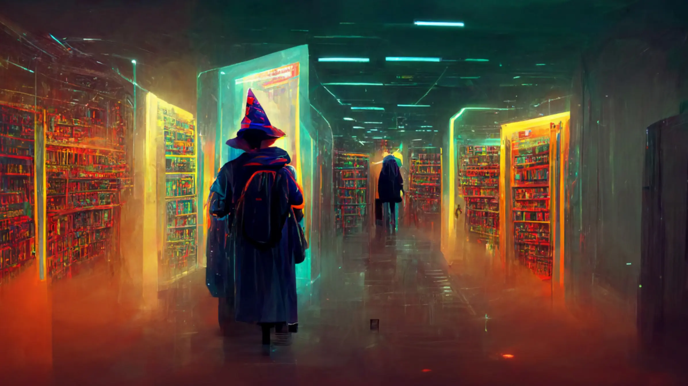
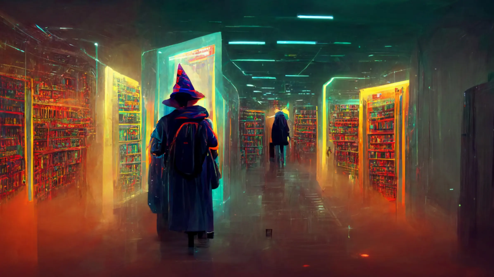
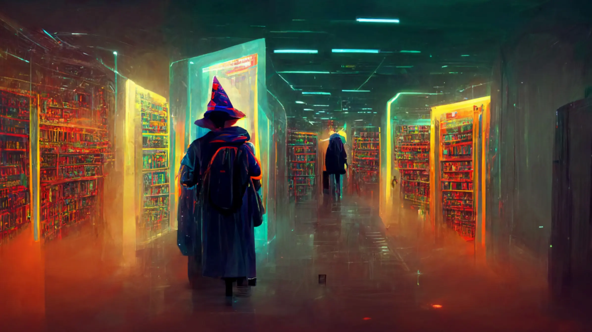

Die folgenden Bilder stammen von der KI Midjourney:


 



Ikigai
Ikigai is a Japanese concept that translates to "reason for being" or "purpose in life." It describes the things that make life worthwhile and helps find a balance between personal passions, skills, what the world needs, and what one can be paid for. In a business context, Ikigai can serve as a guide to developing business ideas that are not only economically successful but also personally fulfilling and socially beneficial.
Bitte füllen Sie alle Teile des Fragebogens aus:
Venture-to-Person-Fit
Test
Beispielbilder
Die folgenden Bilder stammen von der KI Midjourney:

Mehr anzeigen
KI-Webseiten
Da es mittlerweile bereits sehr viele Künstliche Intelligenzen gibt, ist es schwer zu sagen, welche die beste ist.
Deshalb sind hier die zwei bekannstesten Webseiten aufgelistet:
ChatGPT
ChatGPT ist ein fortschrittliches künstliches neuronales Netzwerk, das auf der GPT-3.5-Architektur von OpenAI basiert. Es wurde entwickelt, um menschenähnliche Konversationen zu führen und komplexe sprachliche Aufgaben zu bewältigen. GPT steht für "Generative Pre-trained Transformer", was bedeutet, dass das Modell auf einer großen Menge an Textdaten vortrainiert wurde, um ein tiefes Verständnis für natürliche Sprache zu entwickeln. ChatGPT kann in verschiedenen Anwendungsbereichen eingesetzt werden, darunter Kundensupport, Textgenerierung, Informationssuche, Programmierung, Sprachübersetzung und vieles mehr. Es kann Fragen beantworten, Probleme lösen, Ratschläge geben und sogar Geschichten erzählen, alles auf eine Art und Weise, die einer menschlichen Unterhaltung ähnelt. Das Modell lernt aus seiner Interaktion mit den Benutzern und kann kontinuierlich verbessert werden. Es ist darauf ausgelegt, sich an den individuellen Schreibstil und die Bedürfnisse der Benutzer anzupassen. Dabei ist es jedoch wichtig zu beachten, dass ChatGPT trotz seiner Leistungsfähigkeit auch Einschränkungen hat und gelegentlich falsche oder unangemessene Antworten geben kann. OpenAI setzt sich aktiv dafür ein, die Sicherheit und Zuverlässigkeit von ChatGPT zu verbessern, um potenzielle Missbrauchsmöglichkeiten zu reduzieren und die Verwendung für positive Zwecke zu fördern. Benutzer werden ermutigt, verantwortungsbewusst mit dem Modell umzugehen und seine Ergebnisse kritisch zu bewerten, um eine bestmögliche Nutzung zu gewährleisten.
Informationsvideo
Quiz